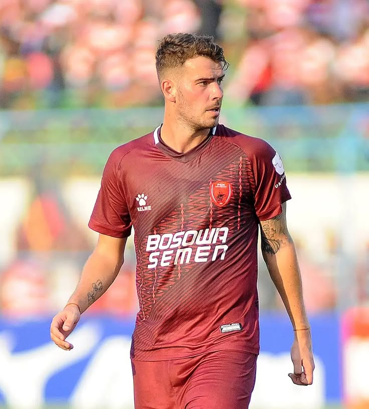
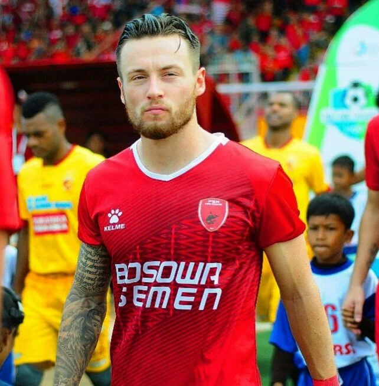
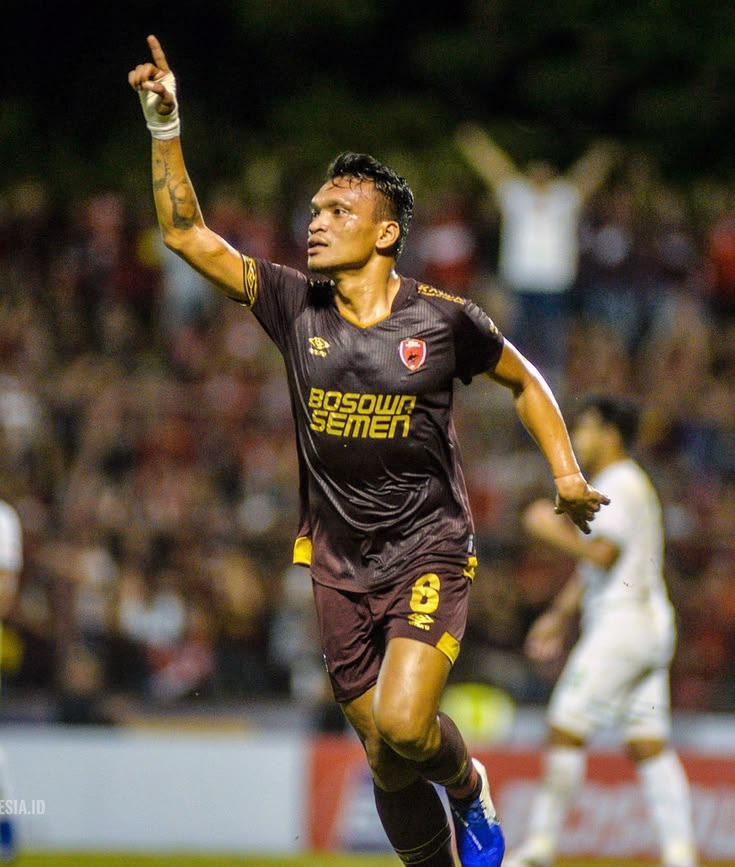

TOP 4 BEST
PLAYER
Mengenal beberapa pemain yang memiliki perjalanan dan kontribusi penting bersama PSM Makassar.

Tetta Pluim
Gelandang Serang • Belanda
Wiljan Pluim merupakan salah satu pemain asing yang sangat dikenal dalam perjalanan modern PSM Makassar. Pemain asal Belanda ini bergabung dengan PSM pada tahun 2016 dan menjadi salah satu pemain penting dalam skuad Juku Eja.
Pluim kemudian menjadi sosok penting di dalam tim, termasuk sebagai kapten. Ia turut membawa PSM meraih gelar Liga 1 2022/2023 serta menjadi bagian dari tim yang menjuarai Piala Indonesia 2019.

Marc Klok
Gelandang • Belanda / Indonesia
Marc Klok bergabung dengan PSM Makassar pada tahun 2017 setelah sebelumnya berkarier di beberapa klub Eropa. Bersama PSM, Klok menjadi salah satu gelandang penting dan dikenal karena kemampuan bermain serta kontribusinya di lini tengah.
Selama membela PSM, Klok tampil dalam berbagai pertandingan dan menjadi bagian dari perjalanan tim sebelum kemudian melanjutkan kariernya di Indonesia bersama Persija Jakarta dan Persib Bandung.
Yuran Fernandes
Bek Tengah • Cape Verde
Yuran Fernandes merupakan pemain asal Cape Verde yang bergabung dengan PSM Makassar pada tahun 2022. Kehadirannya memperkuat lini pertahanan PSM dan membuatnya menjadi salah satu pemain penting dalam skuad Juku Eja.
Yuran menjadi bagian dari tim PSM yang berhasil memenangkan Liga 1 musim 2022/2023. Ia juga dikenal sebagai salah satu pemain asing yang memiliki perjalanan cukup panjang bersama PSM.

Ferdinan Sinaga
Penyerang • Indonesia
Ferdinan Sinaga merupakan salah satu penyerang Indonesia yang pernah memperkuat PSM Makassar. Ia dikenal sebagai pemain yang memiliki semangat dan karakter kuat ketika bermain di lini depan.
Kehadirannya menjadi bagian dari perjalanan PSM dalam berbagai kompetisi sepak bola Indonesia. Ferdinan juga menjadi salah satu pemain lokal yang dikenang oleh para pendukung PSM Makassar.